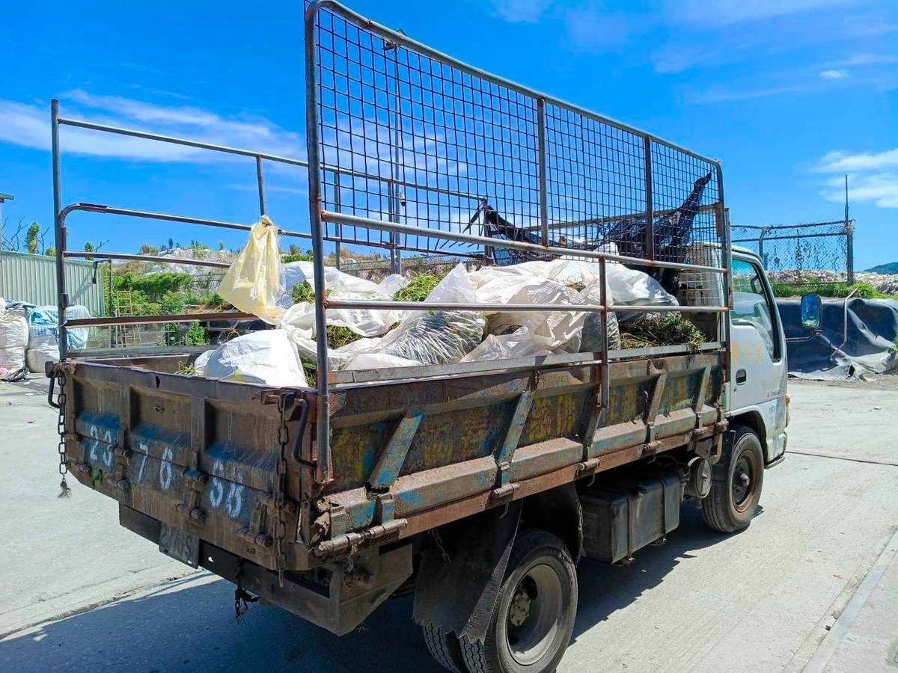

吉安小花蔓澤蘭收購開跑 游淑貞推全民拔除綠癌

可樂電子報小編/編輯
為全面捍衛在地本土生態、防堵外來入侵物種蔓延，花蓮縣吉安鄉公所公告115年度小花蔓澤蘭收購計畫即日起正式啟動。即日起至10月31日止，每週三上午9點至11點30分，於吉安鄉清潔隊光華垃圾場受理收購，結合縣民與社區力量共同阻絕「植物殺手」，守護綠意山林。

吉安鄉長游淑貞表示，今年度小花蔓澤蘭收購計畫獲花蓮縣政府核定補助，提供每公斤8元獎勵金，期望透過實質獎勵激發全民參與熱忱，將防除「綠癌」轉化為社區營造與環保行動。她強調，小花蔓澤蘭生長極為強勢且耐旱，其藤蔓一旦纏繞樹冠將剝奪林木光合作用導致整株枯死，唯有在10月開花結果前全面連根防堵，才能徹底斬斷繁殖生機。

鄉公所農業課提醒鄉親，拔除小花蔓澤蘭時必須掌握正確防治工法，務必自根部連根拔起，切忌僅割除表層枝藤；若藤蔓已攀爬上高樹無法整株拉下，亦應自基部採取斷根處理，徹底清除土壤內根系，避免斷枝落地接觸土面再度發根蔓生。

凡設籍花蓮縣之鄉親或在地登記立案之社區發展協會皆可參與收購。鄉親僅需將拔除之小花蔓澤蘭以透明或半透明袋裝妥，攜帶國民身分證、金融機構存摺影本與私章，至光華垃圾場收購現場由工作人員協助辦理過磅檢核。吉安鄉公所近年透過公私協力讓入侵面積逐年銳減，期盼公私齊心打造生態永續的優質家園。